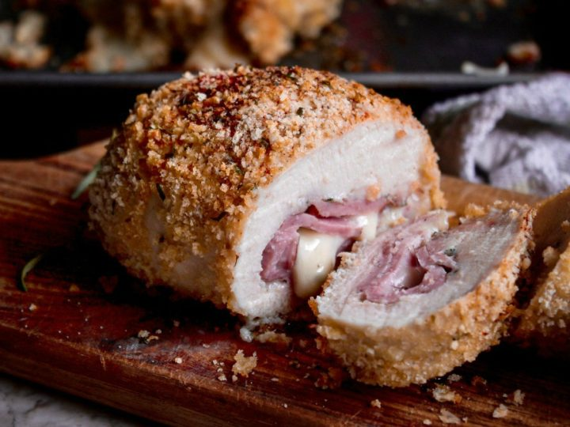

Cordon Bleu

A cordon bleu or schnitzel cordon bleu is a dish of meat wrapped around cheese (or with cheese filling), then breaded and pan-fried or deep-fried. Veal or pork cordon bleu is made of veal or pork pounded thin and wrapped around a slice of ham and a slice of cheese, breaded, and then pan-fried or baked.
Steps
- Place a chicken breast on a flat work surface. Slice horizontally through the middle, being careful not to cut all the way through to the other side. Open the 2 sides and spread them out like an open book. Place chicken breast between 2 sheets of heavy plastic on a solid, level surface; lightly pound with the smooth side of a meat mallet to a 1/4-inch thickness. Repeat with remaining chicken breast.
- Season each chicken breast with salt and pepper. Spread Dijon mustard on top. Place 1 slice of cheese on each breast. Top each with 2 slices of ham and 1 slice of cheese. Roll each breast up and secure with a toothpick.
- Place flour in a shallow bowl. Place egg in a second bowl. Mix panko bread crumbs and grated Parmesan in a third bowl.
- Preheat an air fryer to 350 degrees F (175 degrees C).
- Meanwhile, dredge chicken breasts in flour; shake off excess. Dip into beaten egg, allowing any excess egg to drip back into the bowl. Press into bread crumb mixture to coat both sides; place breaded chicken breasts onto a plate and spray with nonstick spray. Let sit for 5 minutes while the air fryer preheats, then arrange breaded chicken in a single layer in the air fryer basket.
- Cook in the preheated air fryer for 10 minutes; flip chicken breasts and spray any dry spots with nonstick spray. Cook until chicken is no longer pink in the center, 8 minutes more. An instant-read thermometer inserted into the center should read at least 165 degrees F (74 degrees C).